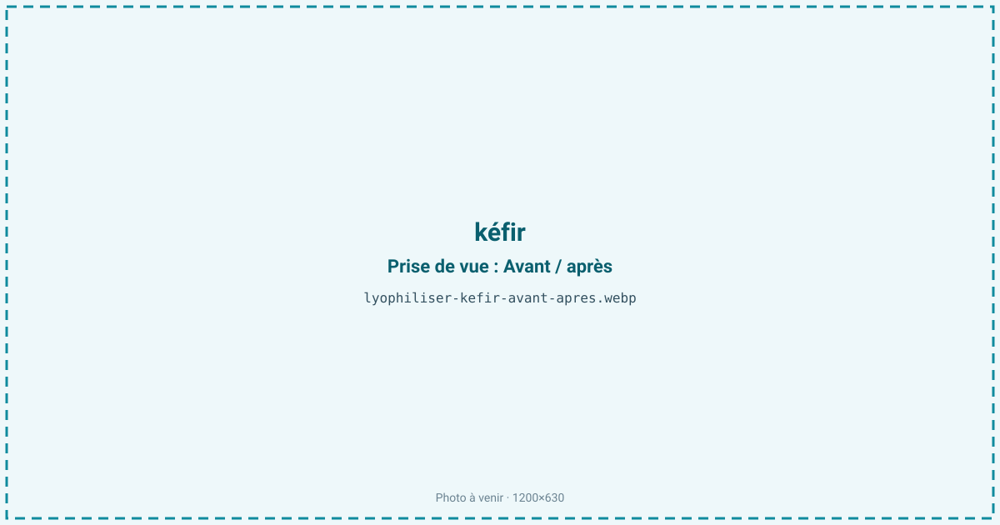
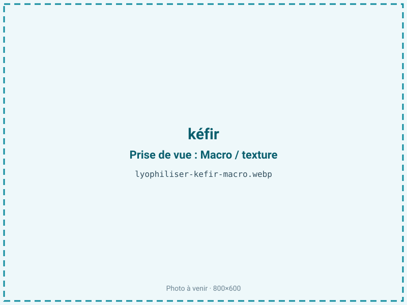
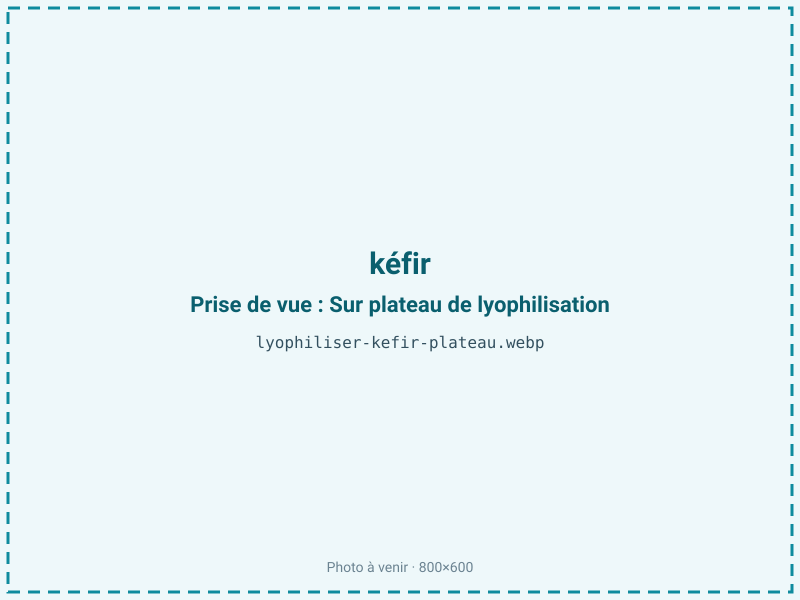
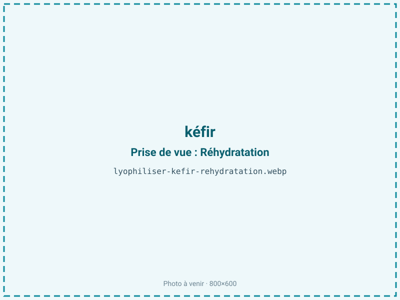

Lyophiliser du kéfir
Le kéfir est une culture vivante fragile, qui se dégrade dès qu'on cesse de la nourrir. La lyophilisation fige ses bactéries et levures en poudre dormante, réactivable des mois plus tard — la seule voie pour conserver durablement une souche ou expédier des grains sans chaîne du froid.

En bref
Comment kéfir se comporte à la lyophilisation
Le kéfir est un écosystème symbiotique : des bactéries lactiques (Lactobacillus, Lactococcus, Leuconostoc) et des levures cohabitent, enchâssées dans les grains au sein d'une matrice d'exopolysaccharide, le kéfiran. Le liquide fermenté titre environ 88 % d'eau. L'enjeu du procédé n'est pas la texture ou l'arôme mais la survie des cellules vivantes : la congélation puis la déshydratation sont deux chocs qui percent les membranes et tuent une partie des micro-organismes.
C'est pourquoi on ajoute des cryoprotecteurs — lait écrémé, tréhalose, saccharose — qui stabilisent les membranes pendant la formation de la glace et retiennent une couche d'eau structurante autour des protéines cellulaires. La congélation doit être menée pour former de fins cristaux, moins destructeurs que de gros cristaux qui lacèrent les cellules. À la sublimation, l'eau part en laissant une poudre poreuse où les souches survivantes entrent en dormance. Le taux de viabilité, exprimé en UFC par gramme avant et après, est l'indicateur clé de ce type de traitement.
Paramètres de cycle
Formuler d'abord la suspension avec des cryoprotecteurs (souvent 10 à 20 % de tréhalose ou de lait écrémé) : sans eux, la viabilité s'effondre. Congeler rapidement, voire de façon poussée (−40 °C ou en azote), pour obtenir de fins cristaux peu destructeurs.
En sublimation, garder une clayette basse — les cellules ne supportent pas la chaleur — et mener un palier secondaire long, car la cible d'aw est très basse, de 0,10 à 0,20. Cette aw basse est indispensable à la survie des souches au stockage : au-dessus, l'activité métabolique résiduelle et l'humidité tuent progressivement les cellules. Le critère d'arrêt n'est pas seulement une aw atteinte mais un compromis validé par un comptage de viabilité (UFC/g) sur le produit sec. Chaque souche a sa sensibilité, à documenter.
Pièges connus
- Ajout de cryoprotecteurs pour la viabilité.
- aw très basse et barrière pour préserver les souches.



Variantes & provenance
On distingue deux produits très différents : les grains de kéfir (le starter réutilisable, riche en kéfiran) et la boisson fermentée finie. Les grains, plus denses et structurés, demandent un cycle et une formulation adaptés, tandis qu'une culture liquide se prête mieux à une poudre homogène. Le kéfir de lait et le kéfir d'eau (à base de sucre et de fruits) n'ont pas la même flore ni le même comportement au séchage, le kéfir de lait bénéficiant des protéines laitières comme cryoprotecteur naturel. La composition exacte en souches, propre à chaque culture, conditionne la viabilité finale : certaines levures résistent mieux que d'autres à la déshydratation.
Conservation & DLUO
Le facteur limitant du kéfir n'est ni l'oxydation ni le brunissement mais la perte de viabilité des micro-organismes : c'est le nombre d'UFC vivantes qui décline avec le temps. Cette survie exige une aw très basse (0,10 à 0,20) : au-dessus, l'humidité résiduelle réactive un métabolisme qui épuise et tue les cellules. Il faut connaître la tension avec la fraction grasse laitière : en tant que produit modérément gras, ses lipides seraient les plus stables entre aw 0,30 et 0,50, car sous 0,30 on retire la monocouche d'eau qui les protège et l'on favorise le rancissement.
Ici, la viabilité prime sur l'oxydation : on descend donc l'aw et l'on protège les lipides par une barrière azotée. Comptez 12 à 24 mois en barrière azotée, au frais, le froid ralentissant à la fois la mortalité cellulaire et l'oxydation. Toute reprise d'humidité est fatale aux souches.
12 à 24 mois en barrière azotée.
Estimez selon votre emballage :
Face aux autres procédés de séchage
Aucun séchage à chaud n'est envisageable pour un kéfir vivant : l'air chaud comme le micro-ondes sous vide tueraient l'essentiel des bactéries et des levures par la température. La seule alternative au froid serait la congélation classique, mais elle impose une chaîne du froid permanente et ne permet ni l'expédition simple ni le stockage longue durée à température ambiante. La lyophilisation est donc la voie de référence pour stabiliser durablement une culture : elle met les souches en dormance sèche, transportables et réactivables. C'est le même principe qui sert à conserver les ferments industriels et les souches de collection.
Marchés & applications
Le kéfir lyophilisé se vend comme starter prêt à l'emploi (sachets de culture réactivable pour refaire du kéfir chez soi ou en atelier), comme ferment standardisé pour l'agroalimentaire, et comme ingrédient de compléments probiotiques (gélules, poudres) valorisant un nombre d'UFC garanti. Il intéresse aussi la conservation de souches de collection. Les clients types sont les fabricants de ferments et de kits de fermentation, les marques de probiotiques, et les laboratoires ou artisans souhaitant sécuriser une souche rare sans dépendre d'une chaîne du froid.
- Grains de kéfir stabilisés
- Ferments prêts à l'emploi
- Compléments probiotiques
Questions fréquentes — kéfir
Les ferments du kéfir survivent-ils à la lyophilisation ?
En grande partie, à condition d'ajouter des cryoprotecteurs et de contrôler la viabilité : une fraction des cellules meurt, mais assez survit pour réactiver la culture. On mesure le résultat en UFC par gramme.
Pourquoi ajouter des cryoprotecteurs ?
Parce que la congélation et la déshydratation percent les membranes cellulaires. Le tréhalose ou le lait écrémé stabilisent les membranes et sauvent une grande part des micro-organismes.
Peut-on refaire du kéfir avec la poudre ?
Oui : c'est tout l'intérêt du starter lyophilisé. Réhydratée dans du lait (ou de l'eau sucrée pour le kéfir d'eau), la poudre relance la fermentation.
Pourquoi une aw aussi basse (0,10-0,20) ?
Parce qu'au-dessus, l'humidité résiduelle réveille un métabolisme qui épuise et tue les cellules au stockage. Une aw très basse maintient les souches en dormance stable.
Combien de temps se conserve le kéfir lyophilisé ?
12 à 24 mois en barrière azotée, idéalement au frais. Toute reprise d'humidité est fatale aux souches, d'où un conditionnement étanche.
Kéfir de lait ou kéfir d'eau, même procédé ?
Le principe est le même, mais la flore diffère et le kéfir de lait profite des protéines laitières comme cryoprotecteur naturel, ce qui facilite un peu la survie des souches.
Peut-on lyophiliser les grains de kéfir eux-mêmes ?
Oui, mais les grains, denses et riches en kéfiran, demandent une formulation et un cycle adaptés ; leur réactivation est ensuite un peu plus lente qu'avec une culture liquide.
Prochaine étape : envoyez-nous 200 g
Vous avez les repères du kéfir. La suite logique : nous envoyer un échantillon et repartir avec une fiche technique sur votre produit — rendement, aw finale, coût au kilo.
Tester du kéfir — 250 à 500 €Déductible de votre premier lot.